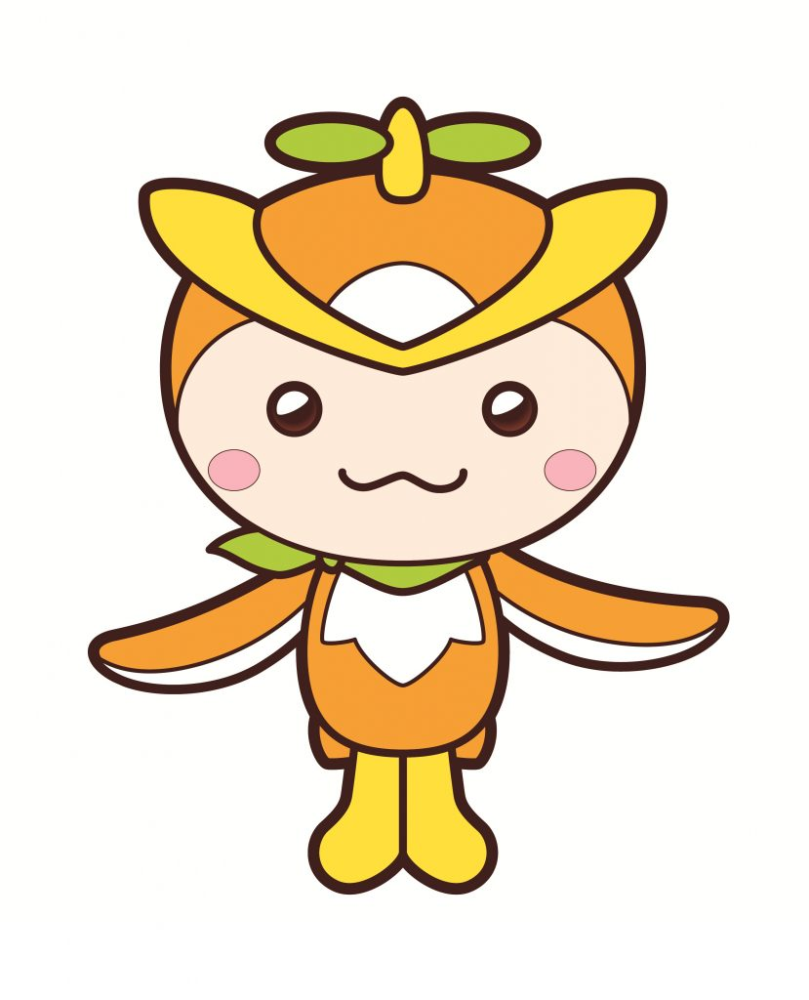
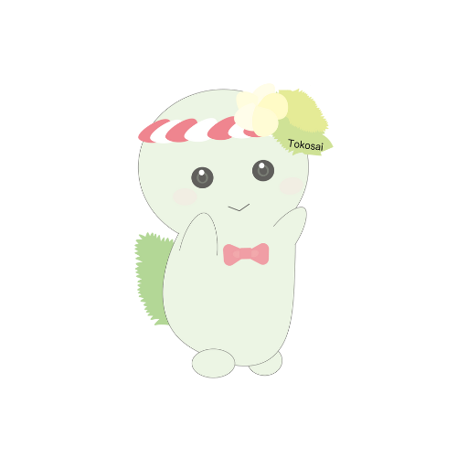

その他の見どころ
前月祭をさらに楽しむ！
各企画以外にも、前月祭を盛り上げる楽しいイベントが盛りだくさんです！
宝探しイベント 🗺️
会場内に隠された宝を探し出す、ワクワクの冒険体験！家族や友達と協力して、すべての宝を見つけ出そう！
早稲田大学「怪獣同盟」によるグリーティング 👹
早稲田大学公認サークル「怪獣同盟」のユニークな怪獣たちが会場を練り歩きます。一緒に写真を撮ったり、触れ合ったりして楽しもう！

公式キャラクター登場！
所沢市の公式キャラクター「トコろん」、そして所沢キャンパス祭キャラクター「とこみどり」が会場内を回遊します。見かけたら声をかけてみてくださいね！

トコろん
(所沢市イメージマスコット)

とこみどり
(所沢キャンパス祭マスコット)